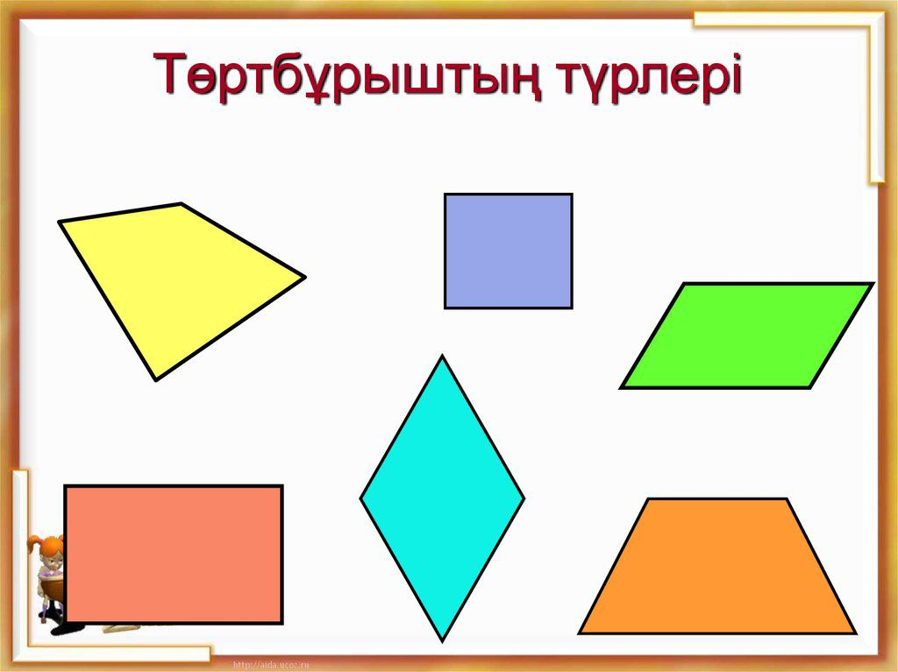

Төртбұрыш
Төртбұрыш (грек тілінен. Τετραγωνον) - төрт нүктеден (шыңдардан) тұратын геометриялық фигура (көпбұрыш), олардың үшеуі бір түзуде жатпайды және осы нүктелерді тізбектей байланыстыратын төрт сегмент (қабырғалар)
Төртбұрыштардың түрлері -параллелограмм, трапеция, ромб, тіктөртбұрыш және шаршы.
